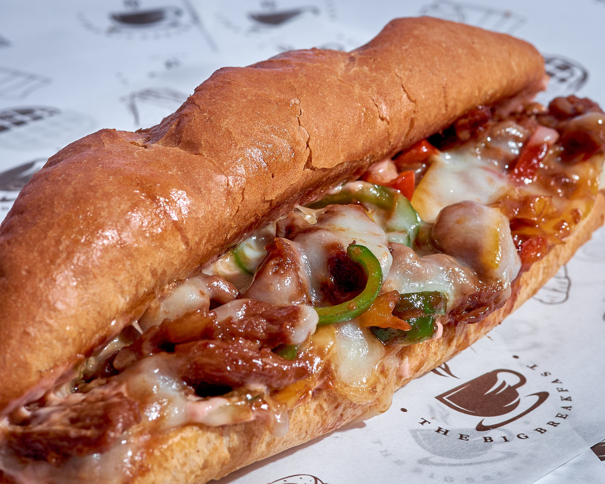

Odin Recipes
Home
Philly Cheesesteak

Photo by Tochukwu Ekeh
Description
Looking for a classic American sandwich that will leave you wanting more? A Philly cheesesteak should do the trick!
Ingredients
- 1⁄2 tsp salt
- 1⁄2 tsp black pepper
- 1⁄2 tsp paprika
- 1⁄2 tsp chili powder
- 1⁄2 tsp onion powder
- 1⁄2 tsp dried thyme
- 1⁄2 tsp dried marjoram
- 1⁄2 tsp dried basil
- 1 lb beef sirloin, cut into 2 in strips
- 3 tbsp vegetable oil
- 1 onion, sliced
- 1 green bell pepper, julienned
- 3 oz Swiss cheese, thinly sliced
- 4 hoagie rolls, split lengthwise
Directions
- Mix salt, pepper, paprika, chili powder, onion powder, garlic powder, thyme, marjoram, and basil together in a small bowl.
- Place steak in a large bowl; sprinkle seasoning mixture over top and stir to coat.
- Heat 1⁄2 of the oil in a skillet over medium-high heat. Add steak in batches if needed to avoid overcrowding the skillet; cook until browned and just cooked through. Transfer cooked steak to a plate.
- Heat the remaining oil in the skillet. Add onion and green pepper; cook and stir until tender and caramelized.
- Preheat the oven on the broiler setting. Divide cooked beef between the bottoms of 4 rolls.
- Layer with onion and green pepper. Top with sliced cheese. Place on a cookie sheet.
- Broil in the preheated oven until cheese is melted.
- Cover with tops of rolls and serve.
Recipe courtesy of Swizzlesticks on AllRecipes